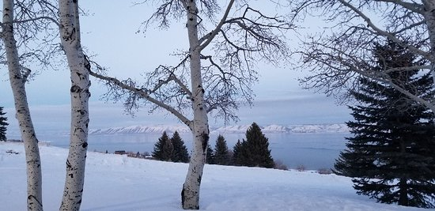

Fish Haven Idaho
Weather Sumary
Currently:
Current:
°F
High:
°F
Wind Chill:
Humidity:
%
Wind Speed:
mph
Five Day Forecast
Fish Haven, Idaho
Fish Haven, originally named Rush Creek, is an unincorporated community along the shores of Bear Lake in Bear Lake County, Idaho, United States. It is 4 km (2.5 miles) north of the Utah border.
The first settlement at Fish Haven was made in 1864.[2] A post office called Fish Haven was established in 1867, and remained in operation until 1962. The community was so named because nearby Bear Lake is a favorite fishing spot.
Vintage pic made by wirestock - www.freepik.esWeather info thanks to:Open Weather Map